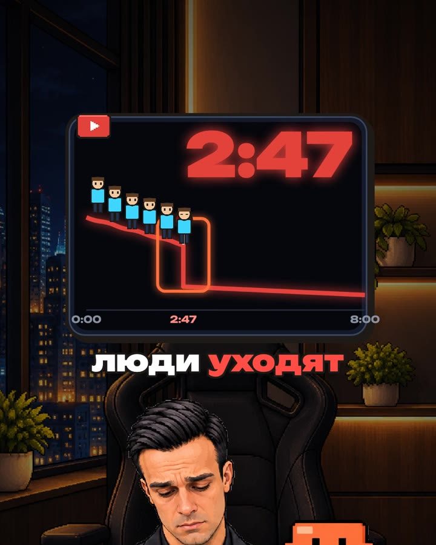
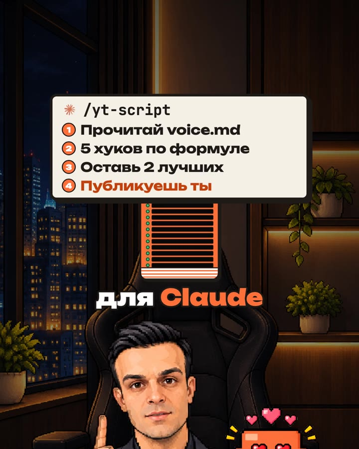
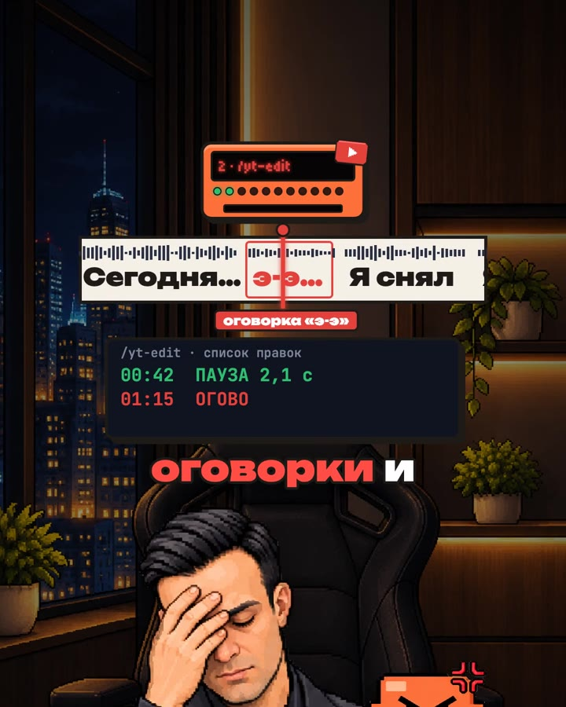
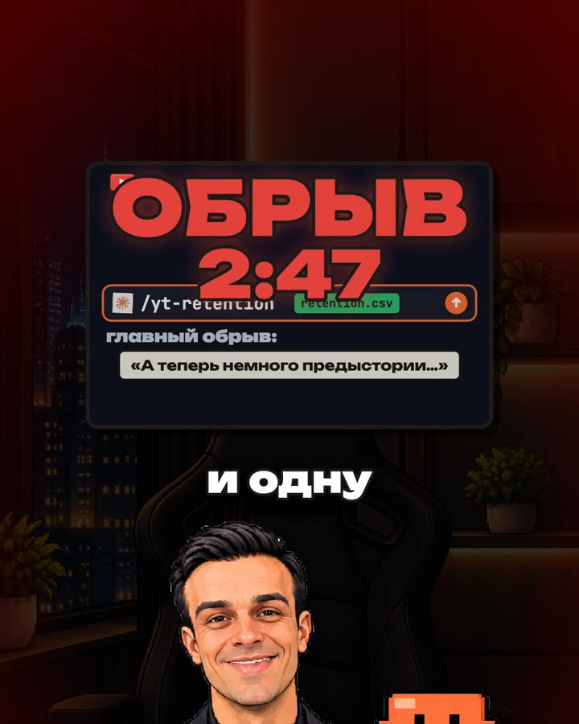
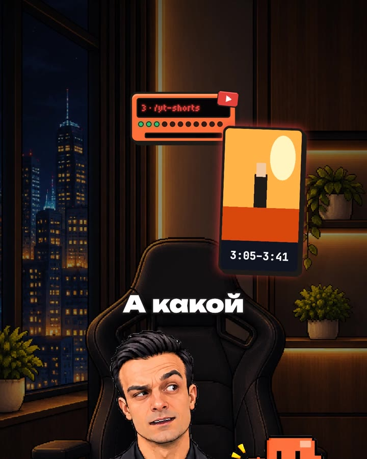

Видео не досматривают, и непонятно почему. Эти навыки отвечают на такие вопросы: где уходят зрители, что вырезать, какой хук взять. Ниже: как поставить все за минуту и готовые фразы для каждого.
11 навыковбесплатноготовая фраза на каждый

Доступ из России. Claude официально не работает в России. Если он у тебя не открывается, подключи BrodSky: сервис, через который Claude открывается и работает из России. 👉 @Brodsky_vpn_bot
Шаг 1
Поставь все навыки сразу
Навык — это готовый рецепт работы: положил один раз, и Claude делает по нему. Все 11 лежат в одном бесплатном открытом наборе (лицензия MIT, без регистрации и ключей). Автор Jake Schincariol. Нужен Claude Code (вкладка Code в приложении Claude, или терминал) и подписка Claude Pro или выше.
Поставь навыки из https://github.com/Jakeschincariol/youtube-agent-skill и проверь, что работает /yt-script. Если для каких-то навыков нужен Python 3, проверь, что он у меня есть.
Поставить командами
В приложении Claude: Customize → Plugins → Add → Add marketplace → Add from a repository, вставь https://github.com/Jakeschincariol/youtube-agent-skill, нажми Sync и поставь плагин youtube-agent.
В терминале: /plugin marketplace add Jakeschincariol/youtube-agent-skill, затем /plugin install youtube-agent.
Все навыки читают один файл с описанием твоего стиля. Без него тексты выходят чужими, а хуки получаются не в твоём духе, и читать их вслух неудобно.
Составь мой voice.md для YouTube-навыков. Вот три моих видео: [ссылки или расшифровки]. Опиши, как я говорю, каких слов никогда не использую, для кого я снимаю и что я не буду обещать зрителю. Сохрани в ~/.claude/youtube/voice.md.
Все 11 навыков

1
Сценарий и хук
/yt-script
Из одной идеи делает сценарий видео. Сначала пишет несколько вариантов хука (это первые фразы, которые цепляют зрителя) по 21 формуле и оценивает каждый, потом пишет весь текст и отмечает, что показывать на экране.
Первые 15 секунд решают, досмотрят ли видео. Здесь над ними работают отдельно.
Используй /yt-script. Идея видео: [тема в одном предложении]. Напиши хуки, оцени каждый, оставь два лучших и напиши сценарий. Для каждого куска отметь, что показываем на экране.
2
Название и обложка парой
/yt-package
Придумывает название и текст на обложку вместе и проверяет их: не обрезается ли название в ленте, не повторяют ли они друг друга, нет ли расплывчатых слов.
Если название и обложка говорят одно и то же, место на экране потрачено зря.
Используй /yt-package. Видео про [тема]. Предложи названия и текст на обложку парами и проверь, что они не повторяют друг друга и не расплывчатые.

3
Что вырезать из записи
/yt-edit
Берёт расшифровку записи и составляет список правок с таймкодами: длинные паузы, слова-паразиты, повторные дубли. Само видео не трогает, только говорит, где резать.
Вместо того чтобы пересматривать запись, получаешь готовый список, что убрать.
Используй /yt-edit. Вот расшифровка моей записи: [путь к файлу .srt]. Составь список правок с таймкодами: паузы, слова-паразиты и повторные дубли.
Нужна расшифровка с таймкодами (файл .srt или .vtt). Если её нет, Claude подскажет, как получить.
4
Ответы на комментарии
/yt-comment
Раскладывает комментарии на четыре кучки, пишет ответы в твоём стиле и подсказывает, какой закрепить.
Отвечать всем долго. Тут сразу видно, кому отвечать в первую очередь.
Используй /yt-comment. Вот комментарии под моим видео: [вставь текст]. Раздели на группы, напиши ответы там, где они нужны, и скажи, какой комментарий закрепить.
5
План выхода на неделю
/yt-plan
Составляет план выходов под то время, которое у тебя реально есть: одно главное видео, одно лёгкое и три Shorts.
Помогает не бросить канал после пары недель, потому что план по силам.
Используй /yt-plan. Моя тема: [тема]. На съёмку и монтаж у меня [сколько] часов в неделю. Составь план на неделю.
6
Что сейчас заходит в твоей теме
/yt-viral
Находит видео в твоей нише и сравнивает их не по размеру канала, а по тому, насколько видео обогнало обычные просмотры своего же канала. Называет приём, на котором оно взлетело.
Показывает, что работает у других, и даёт заготовку, с чего начать.
Используй /yt-viral. Моя ниша: [тема]. Найди видео, которые сейчас заходят лучше обычного для своих каналов, объясни, на чём они сыграли, и собери список идей для меня.

7
Где уходят зрители
/yt-retention
Читает график удержания из YouTube Studio и находит, где люди уходят: в первые секунды, на резком обрыве или постепенно по ходу видео. Называет один главный обрыв и одну правку.
Один главный вывод вместо пяти советов: понятно, что менять в первую очередь.
Используй /yt-retention. Вот файл с графиком удержания моего видео: [путь к файлу .csv] и расшифровка: [путь к .srt]. Найди главный обрыв, скажи, что я говорил в этот момент, и предложи одну правку.
Как получить файл: в YouTube Studio открой видео → Аналитика → Вовлечённость, над графиком удержания нажми значок скачивания. Названия кнопок могут отличаться.

8
Shorts из длинного видео
/yt-shorts
Находит в длинном видео куски по 20–55 секунд, которые понятны без остального видео. Для каждого пишет новую первую фразу и текст на экран.
Один раз снял длинное, получил несколько коротких без новой съёмки.
Используй /yt-shorts. Вот расшифровка моего длинного видео: [путь к .srt]. Найди пять кусков для Shorts, дай таймкоды, новую первую фразу и текст на экран для каждого.
9
Описание и теги
/yt-seo
Пишет описание и теги и подсказывает три запроса, по которым видео должны находить. Пишет под то, что человек реально набирает в поиске.
Помогает, чтобы видео находили не только подписчики.
Используй /yt-seo. Видео про [тема], вот расшифровка: [вставь или путь к файлу]. Напиши описание, теги и назови три запроса, по которым оно должно находиться.
10
Главы с таймкодами
/yt-chapters
По расшифровке делит видео на главы и проверяет их по правилам YouTube, чтобы список глав в видео действительно появился.
Зритель может сразу перейти к нужному месту, и меньше людей бросает видео.
Используй /yt-chapters. Вот расшифровка моего видео: [путь к .srt]. Сделай главы с таймкодами и проверь, что они сработают на YouTube.
11
Разбор всего канала
/yt-audit
Смотрит канал целиком: названия и обложки, регулярность, первые 15 секунд видео. В конце даёт ОДНО главное, что исправить в первую очередь.
Вместо списка из двадцати дел получаешь одно.
Используй /yt-audit. Мой канал: [ссылка]. Разбери его и скажи одну главную вещь, которую мне исправить в первую очередь.
Видео досматривают?
Перешли страницу тому, у кого графики просмотров всё ещё падают на второй минуте.